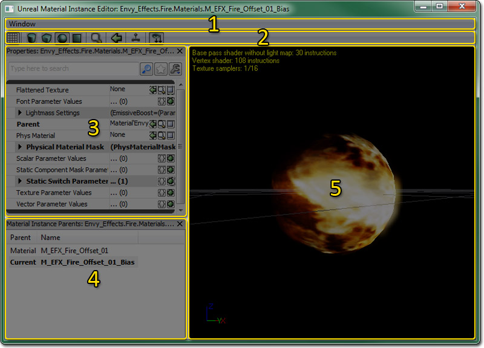
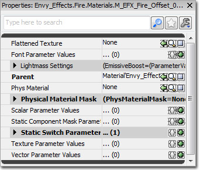
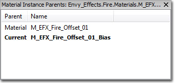
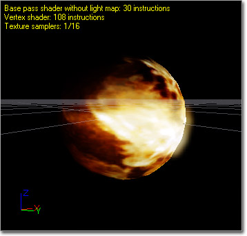
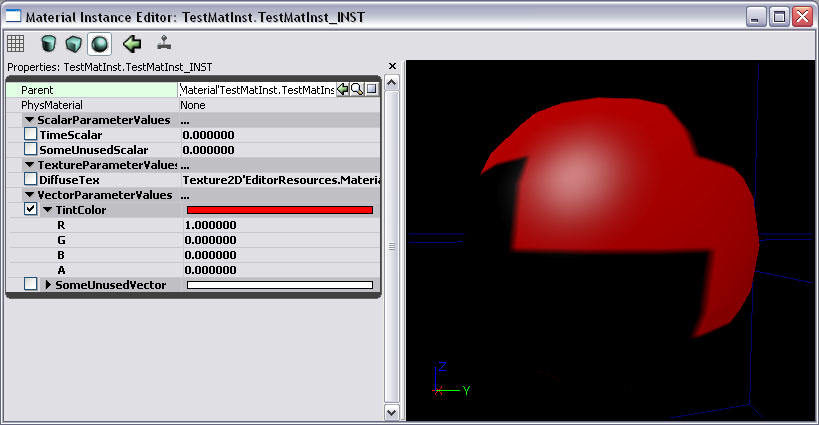

UDN
Search public documentation:
MaterialInstanceEditorUserGuideCH
English Translation
日本語訳
한국어
Interested in the Unreal Engine?
Visit the Unreal Technology site.
Looking for jobs and company info?
Check out the Epic games site.
Questions about support via UDN?
Contact the UDN Staff
日本語訳
한국어
Interested in the Unreal Engine?
Visit the Unreal Technology site.
Looking for jobs and company info?
Check out the Epic games site.
Questions about support via UDN?
Contact the UDN Staff
材质实例编辑器用户指南
概述
打开材质实例编辑器
材质实例编辑器界面

- 菜单条
- 工具栏
- Properties Pane - 材质实例的属性。
- Parent List - 当前材质实例的父代的链列表。
- Preview Pane - 可以预览当前材质实例。
菜单条
窗口
- Properties(属性) - 切换属性面板的显示状态。
- Material Instance Parents - 开启显示父代列表。
工具条
| 图标 | 描述 |
|---|---|
| 在材质实例预览面板中开启背景网格。 | |
    | 选择标准的形状用于预览您的材质实例。 |
| 打开内容浏览器并选择这个材质实例。 | |
 | 在内容浏览器中选中一个静态网格物体，并按下这个按钮来使选中的网格物体作为预览网格物体。 |
| 如果启用此项，则实时地在预览网格物体上更新材质。 为了更好的编辑器性能请禁用此标志。 | |
 | 使父代实例中的所有材质参数在属性面板中显示。 |
属性面板

材质实例编辑器中的属性窗口是所有‘工作’发生的地方。 通过属性窗口，材质实例参数可以被覆盖及改变。将该材质实例的父代材质中存在的每个参数显示在赋给父代材质中的参数的组下面的 Parameter Group（参数组） 中。默认情况下，父项的参数不会被覆盖。 除了这些参数外，还可以在 Properties Pane（属性面板） 中对 PhysicalMaterial 和物理材质蒙板属性以及某些针对移动设备的属性和 Lightmass 进行赋值。父项列表

由于材质实例可以使用其它的材质实例作为父项，有时候很难找到材质实例所基于的最初材质。 父项列表通过显示当前材质实例的父项一直到链的开始处的根材质的链解决了这个问题。 比如，上面显示的父项列表显示了名称为"TestMaterial_INST_INST"的材质实例，它使用材质实例"TestMaterial_INST"作为它的父项。 我们在父项列表中可以看到"TestMaterial_INST"使用"TestMaterial"作为它的父项。 当前正在编辑的实例显示为粗体。 此外，通过双击父项列表中的任何项，都会为那个父项启动编辑器。 父项也可以通过右击父项并选择"Sync Generic Browser(同步到通用浏览器)"来在通用浏览器中定位该父项。预览面板

材质预览面板显示了正在编辑的并被应用到一个网格物体上的材质。 通过拖拽鼠标左键来旋转网格物体。 通过拖拽鼠标的中间键来平移网格物体；通过拖拽鼠标右键来缩放网格物体。 通过按下 L 并拖拽鼠标左键来旋转光源的方向。 用于预览的网格物体可以通过使用相应的工具条控制按钮来改变（形状按钮、“选择预览网格物体”、及“使用选中的及静态网格物体”按钮）。 用于预览的网格物体和材质一同被保存，以便下次您在材质编辑器中打开材质时，材质会在同样的网格物体上进行预览。 这个材质实例编辑器的预览面板还会显示有关这个材质的统计数据，例如，这个材质所使用的各种着色器类型的指令数以及贴图样本数。创建实例

重载参数

工作流程
美术工作人员工作流程
美术工作者使用这个编辑器的情况一般是这样的：- 美术工作人员使用参数创建新的材质来改变材质外观。
- 美术工作人员可以通过在通用浏览器中右击来在包中创建一个材质实例常量。
- 美术工作人员分配先前创建的材质作为新建材质实例常量的父项。
- 美术工作人员修改材质实例的参数来改变材质的外观。
- 美术工作人员及关卡设计人员现在可以在编辑器的任何地方使用新创建的材质实例常量。
关卡设计师工作流程
关卡设计人员使用这个编辑器最常见的情况是这样的：- 美术工作人员使用参数创建新的材质来改变材质外观。
- 关卡设计人员将材质放置于关卡中。
- 关卡设计人员感觉材质需要进行调整，于是可以通过右击 actor 并选择上面描述的菜单选项来创建一个新的材质实例。
- 关卡设计人员勾选它们想替换参数附近的单选框，修改材质的外观。
- （可选项）因为这种方式所创建的材质实例存储在关卡包中，关卡设计人员可以随意地应用创建的材质实例到其它的 actor 上。 材质实例将出现在通用浏览器中的关卡包中。